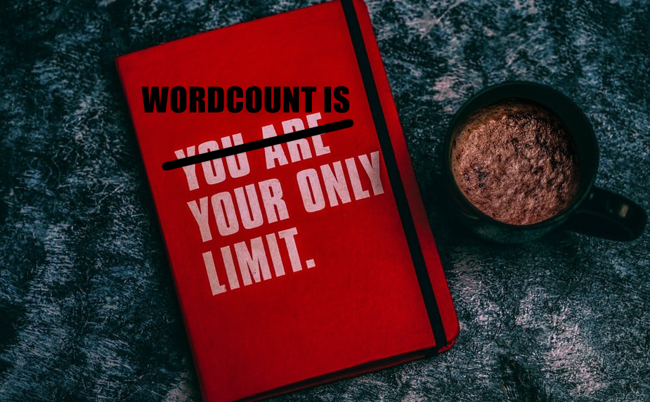

Narrativa e Generi
Numero di Parole, Battute, Cartelle
14 ottobre 2020

Ho scritto un libro di trecento pagine!
Ecco... no.
🌋 Come si calcola la lunghezza di un dattiloscritto?
I parametri ufficiali sono tre:
- Parole
- Battute
- Cartelle
 Numero di Parole
Numero di Parole
- È ottenibile con la funzione “conteggio parole” di qualunque word processor.
- Può sembrare un conteggio impreciso, ma in realtà la media tra tutti gli “e” e tutti i “psiconeuroendocrinoimmunologia” del libro, rendono una stima abbastanza accurata.
- È la misura standard usata in quasi tutto il mondo per definire la lunghezza di un’opera.
In quasi tutto il mondo.
Numero di Battute
- A sua volta ottenibile con la funzione “conteggio parole”, è preferito come unità di misura in Italia.
- La battuta è, come dice il nome, il singolo carattere inserito nel testo.
- Molti concorsi, editori o agenti specificano “battute spazi inclusi”, anche se si tratta di una ridondanza che non dovrebbe essere necessaria.
Numero di Cartelle
Dico sul serio, ma chi l’ha inventato?
- È un valore basato sul numero di battute, è usato in pochissimi paesi (tra cui ahimè l’Italia) e sembra essere stato ideato apposta per creare confusione.
- Esistono cartelle editoriali e cartelle commerciali, così come esistono valori diversi applicati a seconda dell’esigenza.
- Per le cartelle editoriali, i valori più utilizzati sono 1800 battute e 2000 battute per cartella. Spesso troverete il primo valore quando chiedete un preventivo per dei servizi di editing, mentre il secondo valore quando inviate un manoscritto a un editore.
Valori di Conversione
Hai bisogno di convertire in fretta il numero di parole o battute del tuo manoscritto? Ecco alcuni valori di conversione!
- 6 battute sono la media per una parola
- 307 parole sono la media per una cartella da 2000 battute
Quale di questi valori utilizzare?
Personalmente, quando parlo con i colleghi (che preferiscono questo metodo, s’intende) o quando conteggio il mio progresso giornaliero preferisco usare il numero di parole, perché mi consente di capire al primo impatto con che tipo di opera ho a che fare.
In Italia però i sistemi di conteggio standard sono battute e cartelle. Visto che quest’ultimo valore è sempre un punto di domanda, uso sempre il numero di battute: non si può sbagliare.
E il numero di pagine?
Dimenticatelo!
Mai e poi mai conteggiare la lunghezza della propria opera usando il numero di pagine!
Si tratta di un valore estremamente impreciso, influenzato da troppe variabili: tipo e dimensioni del font, foglio A4 o A5, spaziatura, interlinea e margini.
Spesso le case editrici richiedono uno standard per la presentazione dei manoscritti (Times New Roman 12, formato A4 e interlinea doppia), ma mi è capitato spessissimo di leggere linee guida con altri font, altri formati (A5, per esempio), o interlinea singola).
Se presenti il tuo dattiloscritto usando il numero di pagine, rischi di dare un'impressione poco professionale. Per fugare ogni dubbio, è sempre meglio usare il numero di battute.
Sì, spazi inclusi.